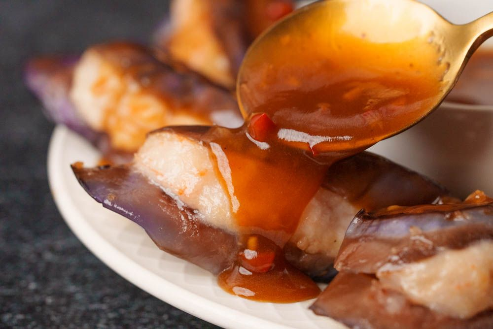

Chinese Stuffed Eggplant

Description
This Stuffed Eggplant recipe completes a trio of delicious stuffed dishes that's found in Hong Kong streets under the name "Three Treasures". The street food versions are actually deep-friend, but to make it friendlier for home-ooking, this recipe only involves steaming and pan-frying. Try it out!
Ingredients
Main
- 1 pound Chinese eggplant
- 7 ounces shrimp
- 7 ounces tonguefish fillet
Filling Marinade
- 1⁄2 teaspoon salt
- 1⁄2 teaspoon sugar
- 1 tablespoon cornstarch
- 1⁄4 teaspoon white pepper
- 1 teaspoon sesame oil
- 2 tablespoons water
Sauce
- 2 cloves garlic
- 1 whole chilli pepper (more of less to taste)
- 3 slice ginger
- 2 tablespoons sugar
- 2 tablespoons light soy sauce
- 1 tablespoon dark soy sauce
- 1 tablespoon oyster sauce
- 11⁄2 tablespoons vinegar
- 5 tablespoons water
- 1⁄2 teaspoon chilli sauce
- 2 teaspoons cornstarch
- 1 teaspoon sesame oil
- 1 teaspoon corn oil
Other
- 4 tablespoons corn oil
- 2 tablespoons water
Directions
- Step 1: Create filling
-
- Start by preparing the filling, which will be a fish and shrimp paste. If you wish, you can opt for only fish, only shrimp, or any combination of proteins like ground pork or beef. While you can sometimes buy this at a Chinese seafood counter, it's good to know how to make it from scratch!
- Start by cleaning and peeling the shrimp (7 ounces). To peel the shell off, twist and wiggle the tail off. Then, hook a finger under the remaining shell and pull it straight off. If the shrimp is not de-veined already, slide a toothpick or tip of a knife under the dark vein and pull it out.
- Give the shrimp a quick wash with clean water to rinse off any debris and shell bits. Squeeze all the water out, and then set it aside.
- Prepare the fish fillet (7 ounces) by patting it dry with a paper towel. Then, lay it down on your chopping board and cut it into thin slices. Once the fish is all chopped into thin slices, you're going to start smashing it. It's best to use the broadest knife you have for this, the closest thing you have to a cleaver.
- Grip your cleaver high on the handle, extend your index finger out to push down on the blade, and turn the cleaver horizontally. Carefully smash the fish slices down into the cutting board. You won't need a lot of sudden, dramatic force, as the fish is delicate and will succumb easily to smashing.
- The smashed fish slices should begin to form a paste, and as you go through the fish, gather it back up into new piles to smash again. It should get stickier and more paste-like with the second pass.
- Then, return to a normal knife-holding position and give the fish paste a thorough chop. This will severe any remaining long strands of connective tissue and ensure that the fish paste is nice and soft.
- Next, start making the shrimp paste. There's no need to slice it first, so proceed directly to smashing. After smashing the shrimp, then chop it thoroughly. Gather the forming shrimp paste together and smash it further to get the paste even finer and stickier.
- Next, mix the fish and shrimp pastes together. Fold them together, then give this mixed paste another thorough smashing.
- Step 2: Marinate filling
-
- Now that we have the shrimp and fish paste, we can finally marinate it. Add:
- white pepper (1⁄4 teaspoon)
- salt (1⁄2 teaspoon)
- sugar (1⁄2 teaspoon)
- cornstarch (1 tablespoon)
- water (2 tablespoons)
to a bowl. Mix it up and pour it over the shrimp and fish paste.
- Mix it very, very thoroughly until the paste has absorbed the marinade and become a sticky paste. The more you mix it, the bouncier and chewier your paste will be when you cook it!
- Put the shrimp and fish paste into the refrigerator to chill while you prepare the eggplant in the next step.
- Step 3: Cut eggplant
-
- Trim off the stem and the end of the eggplant.
- We want to end up with a 1⁄2-inch thick piece of eggplant (1 pound) with a slit in the middle, where we're going to put the filling. The slit will go out 3⁄4 of the way through, so that the top and the bottom of the eggplant can both sandwich the filling and stay intact. We're also going to cut our slices at an angle, so each piece will be longer, with more surface area.
- The first cut, 1⁄4-inch from the end, will become the slit, so angle your knife and cut 3⁄4 of the way through the eggplant. Make the second cut all the way through. The entire piece should be about 1⁄2-inch thick. That's your first piece of stuffable eggplant! Repeat with the rest of the eggplant.
- Step 4: Stuff eggplant
-
- Once all the eggplant is sliced up, take your filling out of the fridge. Use a spoon to scoop the filling into the eggplant slices, then use the edge of the spoon to wipe and clean the sides.
- As for how much filling goes into each piece, that depends on how many pieces of eggplant you were able to cut. Fish and shrimp cook through rather quickly, so you can use a lot of paste.
- Step 5: Prepare sauce
-
- Smash, peel, and mince the garlic (2 cloves).
- Smash and mince the ginger (3 slices⇾.
- Trim and discard the stem of the chilli pepper (1 whole). Then, cut it open, slice thin strips, and mince the chilli pepper finely.
- Set the minced garlic, ginger, and chili pepper aside.
- In a separate bowl, combine:
- sugar (2 tablespoons)
- light soy sauce (2 tablespoons)
- dark soy sauce (1 tablespoon)
- oyster sauce (1 tablespoon)
- vinegar (11⁄2 tablespoons)
- water (5 tablespoons).
Here, you can give it a taste and adjust to your preferences.
- Add cornstarch (2 teaspoons) and chilli sauce (1⁄2 teaspoon) and mix well to combine.
- Step 6: Cook stuffed eggplant
-
- Set your stove to high and heat up a flat-bottomed frying pan or skillet. When the pan is hot, add oil (2 tablespoons) and swirl it around. Turn the heat down to medium or low.
- Add the stuffed eggplant pieces one at a time. When they're all in, you can optionally add more oil (1 tablespoon) along the edge to help the eggplant fry up even more nicely.
- Cover the pan with a lid and let it cook on low for a minute. As it cooks, you can jostle and nudge the pan around to help the eggplant cook evenly.
- After a minute, uncover the lid and check the eggplant. If the bottom of the pieces are golden brown, flip to the other side. Then add more oil (1 tablespoon) and shake and tilt the pan around to help distribute the oil. Put the lid back on and cook for another 30 seconds.
- Then, turn the heat up to high and add water (2 tablespoons) to the pan. The high heat will help heat the water quickly so that it can turn to steam. Once the water is in, turn the stove off, and put the lid on. Let it steam in the covered pan for 2-3 minutes.
- After 2-3 minutes of steaming, the eggplant and filling should be completely cooked through. To cook some of the moisture off, set the stove back to high heat for 15-20 seconds. Then, plate the cooked stuffed eggplant and set aside.
- Step 7: Cook sauce
-
- Clean and dry your pan, or use a new pan to cook the sauce.
- Set the heat to low, add oil (1 teaspoon) to the pan, and swirl to distribute. Add the minced garlic, ginger, and chili pepper and fry them until they're aromatic, or about 20-30 seconds. Then, pour in the sauce, stirring constantly. Turn the heat up a bit to help the sauce come to a boil. Once you see it boil, it's ready. If it's too thick, you can add water to thin it to your desired consistency.
- Turn off the heat and mix in sesame oil (1 teaspoon). You can either serve this sauce next to the stuffed eggplants, or drizzle it over the top. Enjoy!